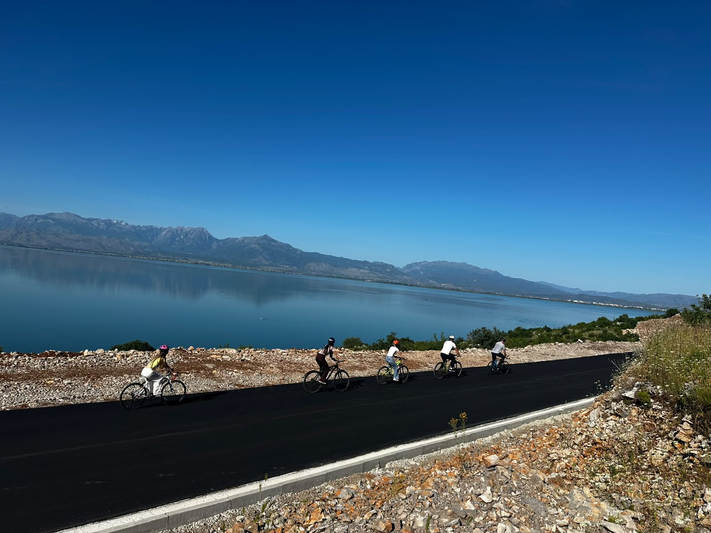

Guided experienceShkodra Lakes & Legends Bike Tour
€35 / personDiscover Ura e Mesit, Rozafa Castle, Shiroka and Zogaj on a scenic guided cycling experience around Lake Shkodra.
- 6 hours
- Bike & helmet included
- Farm breakfast at Michiscamping
- Private & personalized tours available
Optional overnight campervan stay may be available for guests travelling with their own campervan. Please ask us in advance.
Scheduled departures: Wednesday & Sunday